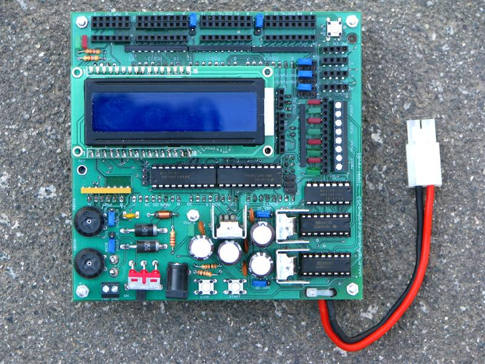

Our robot, like all other robots in the ENPH253 course, was run using a TINAH board. This board is a custom shield for a Wiring I/O board, designed by Engineering Physics staff. It acts as a protective buffer for the board's inputs and outputs, as well as providing control outputs for 4 motors and 3 servos and an LCD screen. This board is programmed using the same interface as an Arduino board, using the C++ language.
Soldiworks Parts are available on GitHub here.
Microcontroller
